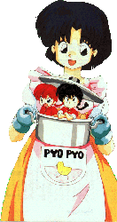

Un po' di Materiale Assortito
|
Un po' di Materiale Assortito |
Questa pagina è dedicata alla presentazione del materiale che ritengo interessante al fine di inquadrare bene tutta l'opera di Ranma, il suo universo, nonché offrire l'opportunità di vedere e sentire qualcosa tratto dalla serie.
|  |
|
| Grafica, impaginazione e testi sono (c) di Francesco "Nibunnoichi" Giordano e non possono essere usati senza il consenso dell'autore. |